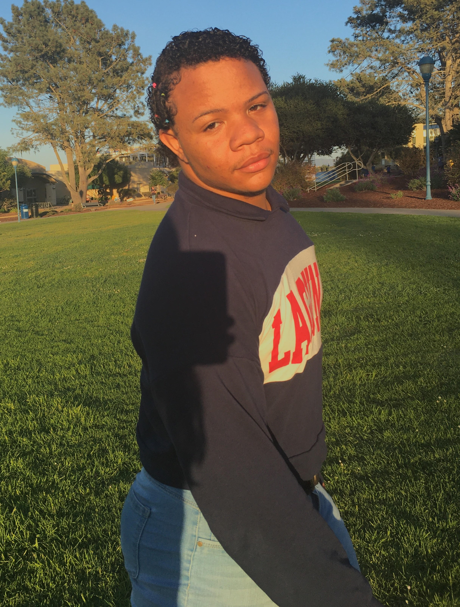

Sean Meeks
Hey! I'm Sean! I'm originally from Los Angeles, California but chose to go to CSUMB to experience the almost non-existent city life (a big difference from LA) and because of the private bathrooms. However, I really do miss the locality of everything and get homesick most of the time. I'm now a Communcations Design major without a concentration because I still have little to no idea what I want to do in life. I changed my major about 5 times. From CART to Music, then from Music to HCOM, then from HCOM to Biology, then from Biology back to HCOM, and now I'm finally here... Communications Design. I enjoy doing a bit of anything and everything so you'll always find me occupied. However, I'm primarily interested in almost all aspects of the perfoming arts. I've always enjoyed indulging in theater, dance, acting, singing, etc. I also love music and sharing my opinions on different the various forms. From music history, to the engineering, to the lyrics, and more. My Spotify account probably has a million hours of listening. Nicki Minaj is the Queen of Rap. From taking CST251, the primary thing that I hope to learn is how deep a website actually goes. I've always known that there was more that just the surface and WEEBLY doesnt give a great understanding of a website's "genetic" makeup. I hope to take that knowlegde and develop the ability to utilize the webtools taught to create my own webiste of some sort.